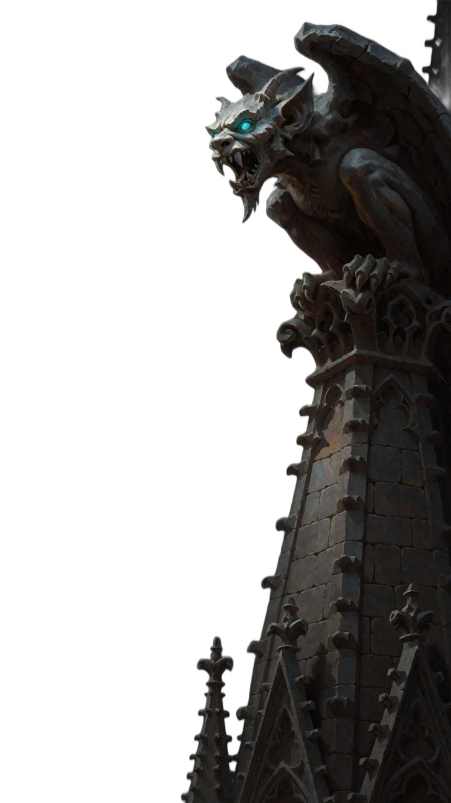
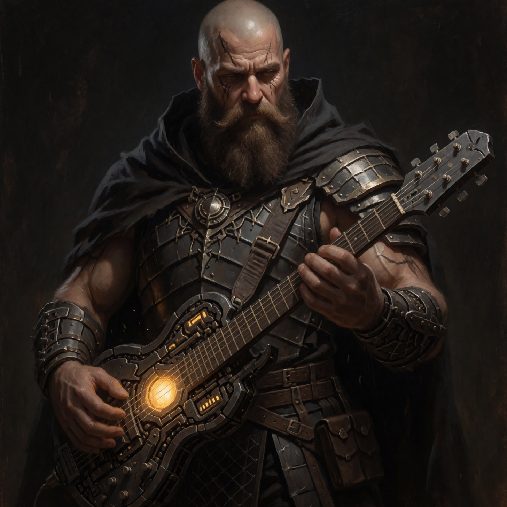

NOTES ISKAREOTUS — это твоя темная сторона души.
Это симфонический готик-метал, пропитанный мрачным средневековьем и темным фэнтези. Это история о падших ангелах и восставших демонах, о забытых культах и мрачных писаниях, написанных кровью.
Здесь нет места свету. Только тяжелые риффы, оперный вокал, готические хоры и древние существа, что скрываются в тенях. Каждый трек — это ритуал. Каждый альбом — это страница из запретной книги.
Слушай. Пока твоя тьма не поглотила тебя.